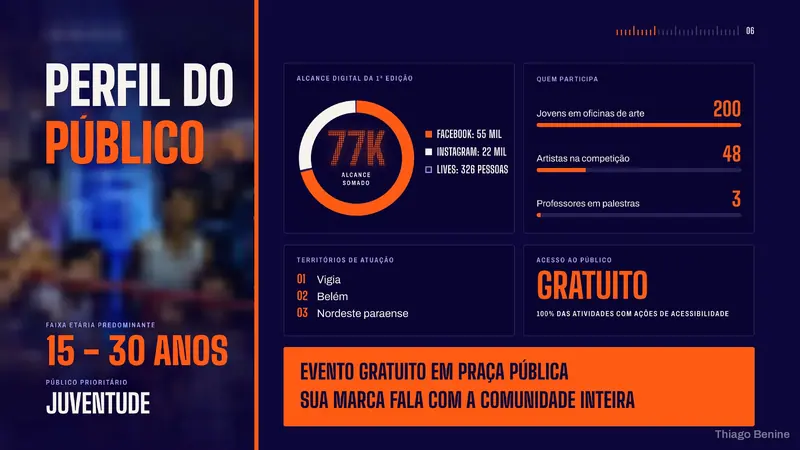

Apresentações
Apresentação corporativa de cultura e valores
Corporativo4 dias 5,0
Slides, mídia kits, portfólios em PDF e diagramação de livros e e-books.


Apresentações
Corporativo4 dias 5,0
Apresentações
Artesanato4 dias 5,0

Apresentações
Educação4 dias 4,8

Apresentações
Cultura4 dias 5,0

Apresentações
Carreira4 dias 5,0
Miolo diagramado em A5, Capa finalizada, PDF para impressão
Apresentações
Editorial3 dias

Design
Editorial4 dias 5,0

Design
Editorial4 dias
Nenhum trabalho com essa combinação.
Tire um dos filtros para ver mais:
Me chame pela 99Freelas. Você recebe a proposta com escopo, prazo e valor fechados antes de começar.
4,98 em 86 avaliações · 93 projetos concluídos